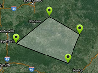

Example of calculating the size of area.
Usage instructions:
Add this script to map GameObject.
Hold Left Shift and click on the map to add a point.
Hold Control to move the points.
Add this script to map GameObject.
Hold Left Shift and click on the map to add a point.
Hold Control to move the points.
CalcAreaExample.cs
/* INFINITY CODE 2013-2016 */
/* http://www.infinity-code.com */
using System.Collections.Generic;
using System.Linq;
using UnityEngine;
namespace InfinityCode.OnlineMapsExamples
{
[AddComponentMenu("Infinity Code/Online Maps/Examples (API Usage)/CalcAreaExample")]
public class CalcAreaExample : MonoBehaviour
{
public Texture2D markerTexture;
private OnlineMaps api;
private bool changed = false;
private List<OnlineMapsMarker> markers = new List<OnlineMapsMarker>();
private List<Vector2> markerPositions = new List<Vector2>();
private OnlineMapsDrawingPoly polygon;
public float borderWeight;
private float _borderWeight;
private void CheckMarkerPositions()
{
// Check the position of each marker.
for (int i = 0; i < markers.Count; i++)
{
if (markerPositions[i] != markers[i].position)
{
// If the position marker changed, then change the value in markerPositions.
// In the polygon value changes automatically.
markerPositions[i] = markers[i].position;
changed = true;
}
}
}
private void OnMouseUp()
{
if (Input.GetKey(KeyCode.LeftShift))
{
// Get the geographical coordinates of the cursor.
Vector2 cursorCoords = api.control.GetCoords();
// Create a new marker at the specified coordinates.
OnlineMapsMarker marker = api.AddMarker(cursorCoords, markerTexture,
"Marker " + (api.markers.Length + 1));
// Save marker and coordinates.
markerPositions.Add(cursorCoords);
markers.Add(marker);
// Mark that markers changed.
changed = true;
}
}
private void Start()
{
// Get a reference to an instance of the map.
api = OnlineMaps.instance;
_borderWeight = borderWeight;
}
private void Update()
{
if (_borderWeight != borderWeight)
{
_borderWeight = borderWeight;
if (polygon != null)
{
polygon.borderWeight = borderWeight;
api.Redraw();
}
}
// Check the position of the markers.
CheckMarkerPositions();
// If nothing happens, then return.
if (!changed) return;
changed = false;
// If the number of points is less than 3, then return.
if (markers.Count < 3)
{
api.Redraw();
return;
}
// If the polygon is not created, then create.
if (polygon == null)
{
// For points, reference to markerPositions.
// If you change the values in markerPositions, value in the polygon will be adjusted automatically.
polygon = new OnlineMapsDrawingPoly(markerPositions, Color.black, borderWeight, new Color(1, 1, 1, 0.3f));
// Add an element to the map.
api.AddDrawingElement(polygon);
}
// Calculates area of the polygon.
// Important: this algorithm works correctly only if the lines do not intersect.
float area = 0;
// Triangulate points.
int[] indexes = OnlineMapsUtils.Triangulate(markerPositions).ToArray();
// Calculate the area of each triangle.
for (int i = 0; i < indexes.Length / 3; i++)
{
// Get the points of the triangle.
Vector2 p1 = markerPositions[indexes[i * 3]];
Vector2 p2 = markerPositions[indexes[i * 3 + 1]];
Vector2 p3 = markerPositions[indexes[i * 3 + 2]];
// Calculate the distance between points.
float d1 = OnlineMapsUtils.DistanceBetweenPoints(p1, p2).magnitude;
float d2 = OnlineMapsUtils.DistanceBetweenPoints(p2, p3).magnitude;
float d3 = OnlineMapsUtils.DistanceBetweenPoints(p3, p1).magnitude;
// Calculate the area.
float p = (d1 + d2 + d3) / 2;
area += Mathf.Sqrt(p * (p - d1) * (p - d2) * (p - d2));
}
Debug.Log("Area: " + area + " km^2");
api.Redraw();
}
}
}